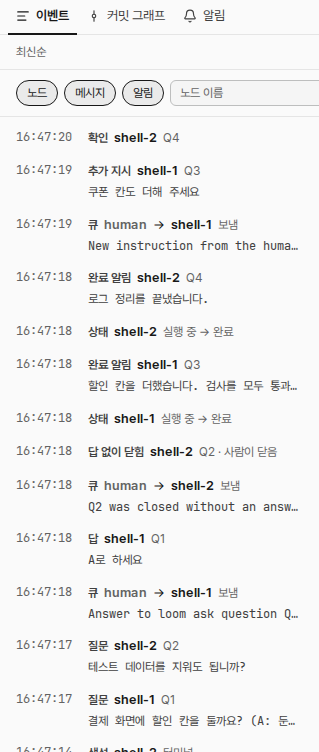
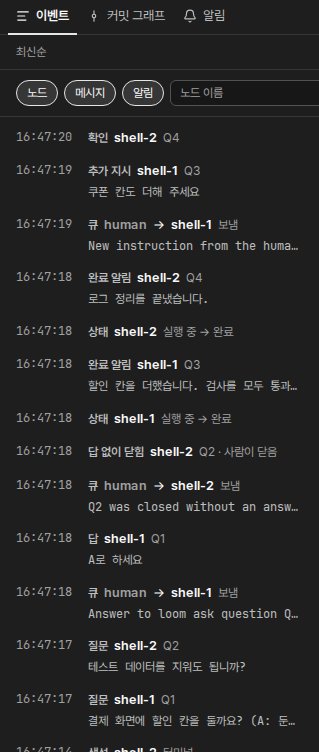

사람 지시: 「이벤트에도 알림별 색깔 적용해 어떻게 적용할지는 목업으로제공」. 받은편지함은 질문을 노랑(--warn), 완료를 초록(--ok)으로 보인다. 이벤트 목록의 알림 줄에 같은 두 색을 붙인다. 바뀌는 곳은 점선 안의 목록이다. 글자 색과 줄 배치는 그대로 둔다.
① 지금 시험 데몬 캡처 · 질문 2, 답 1, 답 없이 닫힘 1, 완료 2, 추가 지시 1, 확인 1


② 바뀐 뒤: 줄 왼쪽 막대 3px 막대 · 승인한 A안
라이트
이벤트커밋 그래프알림
최신순
노드메시지알림노드 이름
확인shell-2Q4
추가 지시shell-1Q3쿠폰 칸도 더해 주세요
큐human → shell-1보냄New instruction from the human in the loom inbox…
완료 알림shell-2Q4로그 정리를 끝냈습니다.
상태shell-2실행 중 → 완료
완료 알림shell-1Q3할인 칸을 더했습니다. 검사를 모두 통과했습니다.
답 없이 닫힘shell-2Q2 · 사람이 닫음
답shell-1Q1A로 하세요
질문shell-2Q2테스트 데이터를 지워도 됩니까?
질문shell-1Q1결제 화면에 할인 칸을 둘까요? (A: 둔다 / B: 두지 않는다, 권장: A)
생성shell-2터미널
다크
이벤트커밋 그래프알림
최신순
노드메시지알림노드 이름
확인shell-2Q4
추가 지시shell-1Q3쿠폰 칸도 더해 주세요
큐human → shell-1보냄New instruction from the human in the loom inbox…
완료 알림shell-2Q4로그 정리를 끝냈습니다.
상태shell-2실행 중 → 완료
완료 알림shell-1Q3할인 칸을 더했습니다. 검사를 모두 통과했습니다.
답 없이 닫힘shell-2Q2 · 사람이 닫음
답shell-1Q1A로 하세요
질문shell-2Q2테스트 데이터를 지워도 됩니까?
질문shell-1Q1결제 화면에 할인 칸을 둘까요? (A: 둔다 / B: 두지 않는다, 권장: A)
생성shell-2터미널
알림 줄마다 왼쪽 끝에 세로 막대를 둔다. 긴 목록을 훑을 때 가장 잘 보인다.
막대가 줄을 고른 바탕(--accent-wash)과 겹쳐도 보인다.
③ 색을 고르는 규칙
계열
이벤트 종류
색
질문
질문, 답, 답 없이 닫힘
노랑 --warn (질문 알약·배지와 같다)
완료
완료 알림, 추가 지시, 확인
초록 --ok (완료 알약·노드 「완료」 점과 같다)
없음
노드(생성·상태·입양·제거·이름 변경), 메시지, 계정
색 없음(지금과 같다)
사람의 답(「답」·「추가 지시」)은 그 답이 닫은 알림의 계열을 따른다.
사람의 답이 노드에 간 메시지 줄(「큐 human → …」)은 메시지라서 색을 붙이지 않는다.
글자 색은 바꾸지 않는다. 라이트의 노랑 글자는 대비가 모자라기 때문이다. 종류 낱말이 뜻을 함께 보인다(색만으로 뜻을 보이지 않는다).